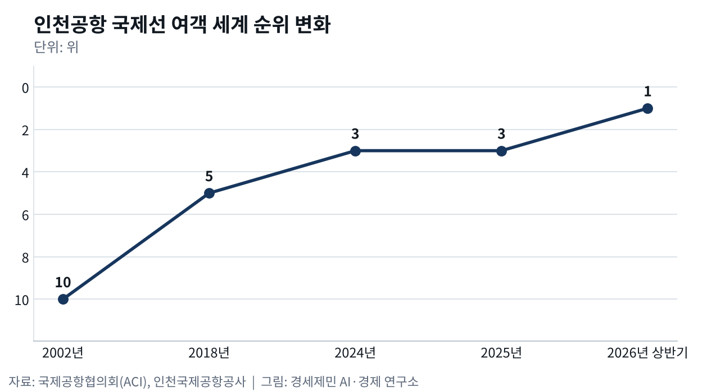
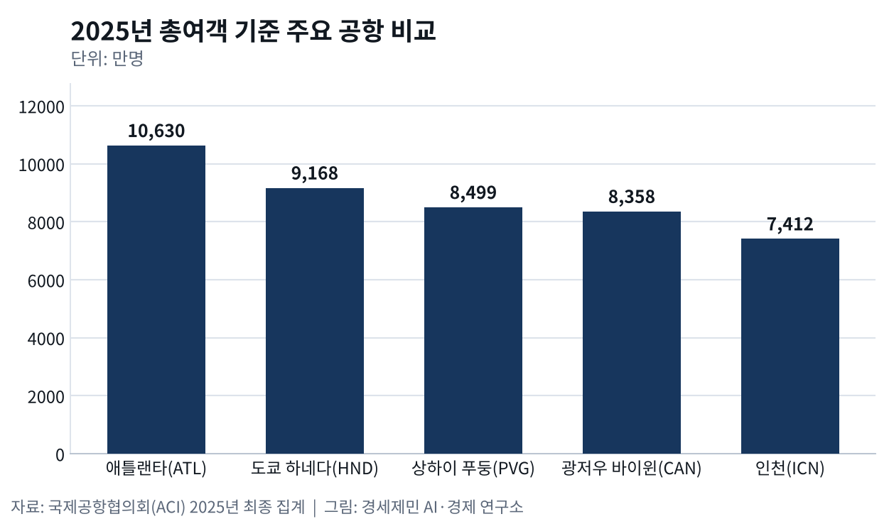

인천공항, 개항 25년 만에 국제선 세계 1위
상반기 3839만명으로 히스로 3779만명·창이 3453만명 제쳐
화물은 6위에서 7위로, 5단계는 정부 계획 반영 미정
AI경세제민=김갑봉 기자 | 인천국제공항공사가 8월 13일 발표한 자료를 보면 인천국제공항(ICN)은 올해 상반기 국제선 여객 3839만명을 처리했다. 국제공항협의회(ACI) 잠정 통계로 세계 공항 1234곳 가운데 1위다. 영국 런던 히스로공항(LHR)이 3779만명, 싱가포르 창이공항(SIN)이 3453만명으로 뒤를 이었다. 2001년 개항한 뒤 처음 오른 자리다.
2002년 10위, 2026년 상반기 1위
인천공항 국제선 여객 순위는 2002년 세계 10위였다. 2018년 5위에 올랐고 2024년과 2025년에는 3위였다. 2025년 국제선 여객은 7355만4772명으로 개항 이후 가장 많았다. 공사는 올해 1위 배경으로 미국과 이란 전쟁을 꼽았다. 두바이와 히스로 여객 증가세가 주춤한 사이 인천이 수요를 흡수했다고 분석했다.
전쟁이 바꾼 것은 환승이다. 상반기 인천 환승객은 424만명으로 1년 전 359만명보다 18.1% 늘었다. 2025년 한 해 환승객은 804만6572명으로 전년보다 2.3% 줄었고 2019년의 95.9% 수준이었다. 중국과 동남아에서 미주와 유럽으로 가는 직항이 늘었다. 서울신문은 러시아 영공을 지나는 중국 항공사들이 환승 수요를 흡수한 영향으로 풀이했다.

ACI가 7월 15일 낸 2025년 최종 집계에서 인천은 총여객 7412만6912명으로 세계 12위였다. 1위 미국 애틀랜타공항(ATL)은 1억630만명이었다. ACI는 20위 안 미국 공항 다섯 곳 가운데 네 곳이 국내선 비중 80~95%라고 밝혔다. 국내선 여객이 전체의 1%에도 못 미치는 인천이 총여객 12위에 머무는 까닭이 여기에 있다.
18조170억원 들인 1~4단계, 국고는 18%
공사가 3월 27일 개항 25주년에 낸 자료를 보면 1~4단계 확장공사 총사업비는 18조170억원이다. 국고 지원은 3조2874억원으로 18%다. 나머지 82%는 공사채 발행 같은 자체조달로 채웠다. 2007년부터 2024년까지 정부에 낸 배당금은 약 3조269억원이다. 국토교통부 자료로는 1단계 5조6323억원, 2단계 2조9688억원, 3단계 4조9303억원이 들었다.
2024년 11월 4단계 건설을 마치면서 인천공항은 연간 여객 1억600만명을 받게 됐다. 국제선 용량으로는 홍콩 1억2000만명, 두바이 1억1500만명 다음이다. ACI 세계공항서비스평가(ASQ)에서는 2005년부터 2016년까지 12년 연속 1위를 했다. 공사는 8월 4일 사업비 6조9000억원 규모 우즈베키스탄 타슈켄트 신공항 개발·운영사업을 따냈다.
한중일 블록, 총여객 넷째에 국제선 첫째
한국과 중국과 일본은 생산과 교역과 사람이 한 덩어리로 도는 경제블록이다. 2025년 총여객은 도쿄 하네다공항(HND)이 9168만명으로 세계 3위, 상하이 푸둥공항(PVG)이 8499만명으로 5위였다. 광저우 바이윈공항(CAN)이 8358만명으로 9위, 인천이 12위다. 총여객으로 보면 인천은 블록 안 넷째다.
국제선으로 재면 순서가 뒤집힌다. 2025년 국제선 여객 세계 3위 인천을 앞선 동북아 공항은 없었다. 하네다와 푸둥과 광저우가 총여객에서 앞서고 국제선에서 뒤지는 것은 제 나라 국내선 여객을 함께 받기 때문이다. 2025년 일본 노선 1857만8176명과 중국 노선 1235만6734명을 더하면 인천 국제선의 42%다. 일본 지방 노선은 31개로 나리타 17개, 간사이 12개보다 많다.
타이완 국립해양대 연구진이 아시아·태평양 허브 16곳을 2019년과 2023년으로 나눠 비교한 연구가 있다. 인천은 실제로 갈아탈 수 있는 연결편 수에서 1위였다. 베이징과 상하이와 광저우, 홍콩은 코로나19 뒤 연결성이 크게 줄었다. 연결 효율은 타이베이가 가장 앞섰다. 연구진은 2019년과 2023년 9월 한 주씩 항공 운항 일정 자료로 이를 계산했다.
화물은 7위로 밀리고, 6조원 5단계는 미정
인천 화물은 사정이 다르다. 2025년 물동량은 295만4684톤으로 세계 7위였고 2024년 6위에서 한 계단 내려갔다. 세계 화물 20위 안에 든 동북아 공항 일곱 곳 가운데 인천은 홍콩 507만톤, 푸둥 409만톤 다음이다. 푸둥이 8.3%, 타이베이가 10.1% 늘 때 인천은 0.3% 느는 데 그쳤다. 9위 타이베이와 격차는 45만톤으로 줄었다.
2003~2019년 자료로 항공자유화협정 효과를 분석한 연구를 보면 협정은 인천 화물 운항 빈도를 76.7% 늘렸다. 수송량 증가는 통계로 뚜렷하지 않았다. 연구는 주력 화물인 첨단산업제품 물량이 늘지 않은 데서 그 까닭을 찾았다. 2003년 한국항공대 연구진도 세계 물류기업을 빨리 모으느냐에 물류 허브 성패가 달렸다고 봤다.
공사는 2033년 여객을 1억1100만명으로 내다본다. 지금 수용 능력보다 4%가량 많다. 홍콩과 푸둥은 항공기 세 대가 동시에 뜨고 내리는 3독립 활주로를 쓰지만 인천은 두 대까지다. 제3여객터미널과 제5활주로를 짓는 5단계는 사업비 6조원으로 잡혀 있다. 정부는 제4차 항공정책기본계획에서 5단계 문구를 뺐고 제7차 공항개발종합계획 고시를 앞두고 있다.
※ 이 기사는 AI 프로그램 클로드를 활용해 작성했습니다.


참고문헌
기관 자료
- 국토교통부, "인천국제공항 건설 3단계 확장사업", 2015년 6월 25일. https://www.molit.go.kr/USR/policyData/m_34681/dtl?id=310
- 인천국제공항공사, 2025년 항공운송실적 발표 자료, 2026년 1월 25일.
- 인천국제공항공사, 개항 25주년 성과 발표 자료, 2026년 3월 27일.
- 국제공항협의회(ACI World), "World's Busiest Airports Revealed in Latest Global Rankings", 2026년 4월 14일. https://aci.aero/2026/04/14/worlds-busiest-airports-revealed-in-latest-global-rankings/
- 국제공항협의회(ACI World), "World's Busiest Airports: Atlanta Holds, Asia Climbs. Strong Demand while Asia-Pacific Growth Reshape the Rankings", 2026년 7월 15일. https://aci.aero/2026/07/15/worlds-busiest-airports-atlanta-holds-asia-climbs-strong-demand-while-asia-pacific-growth-reshape-the-rankings/
- 인천국제공항공사, 타슈켄트 신공항 개발·운영사업 수주 발표 자료, 2026년 8월 4일.
- 인천국제공항공사, 2026년 상반기 국제선 여객 실적 발표 자료, 2026년 8월 13일.
연구 논문
- Lee, H., & Yang, H. M., "Strategies for a global logistics and economic hub: Incheon International Airport", 『Journal of Air Transport Management』 9(2), 2003년, pp.113-121. https://doi.org/10.1016/S0969-6997(02)00065-0
- 김갑봉, "항공자유화협정이 인천국제공항의 화물 수송 변화에 미치는 영향 실증분석", 인하대학교 물류전문대학원 박사학위논문, 2023년 2월, 149~150쪽.
- Chang, Y.-C., & Yu, H.-T., "Identifying competitive position for sixteen major Asia-Pacific hubs after the COVID-19 pandemic", 『The Asian Journal of Shipping and Logistics』 42(1), 2026년 3월, pp.54-68. https://doi.org/10.1016/j.ajsl.2025.12.001
언론기사
- 한상봉, "인천공항 '개항 이후 최대 항공운송 실적'", 서울신문, 2026년 1월 25일. https://www.seoul.co.kr/news/economy/2026/01/25/20260125500029
- 이종선, "제7차 공항개발계획 발표 임박···인천공항 5단계 건설 불발 우려 팽배", 인천투데이, 2026년 5월 27일. https://www.incheontoday.com/news/articleView.html?idxno=319326
- 김주엽, "이미 확장중인 동북아 경쟁국… 인천공항 생존 '5단계' 달렸다", 경인일보, 2026년 7월 7일. https://www.kyeongin.com/article/1766923
- 강준완, "인천공항 새 역사…국제선 여객 '세계 1위'", 한국경제, 2026년 8월 13일. https://www.hankyung.com/article/2026081301661
※ 이 기사는 인공지능을 활용해 작성했습니다. 사실관계는 저자가 확인했습니다.
관련기사
- 인천공항 일자리 66만개, 인천 몫은 21만개
- 허브는 밀도로 이긴다, 인천 환승 598만명
- 인천 국제선 여객 세계 1위, 화물 허브는 푸둥에 밀렸다
- 수출은 하늘로 39%, 정비는 해외로 60%
저작권자 © AI경세제민 무단전재 및 재배포, AI학습 및 활용 금지